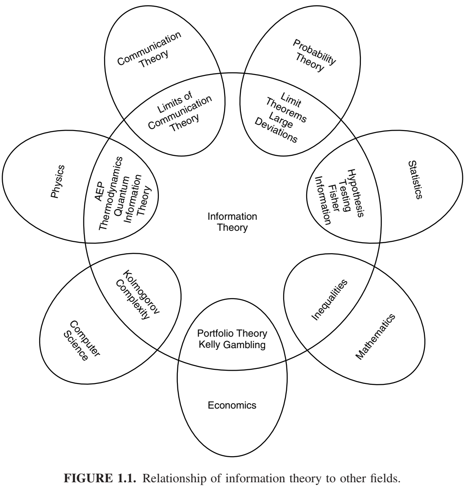
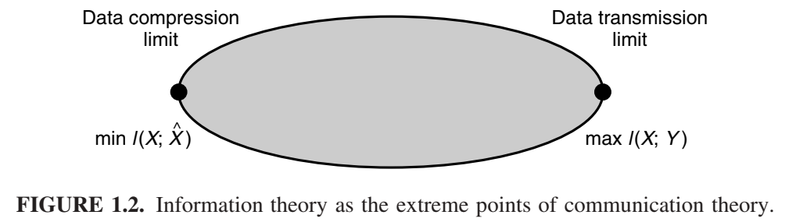
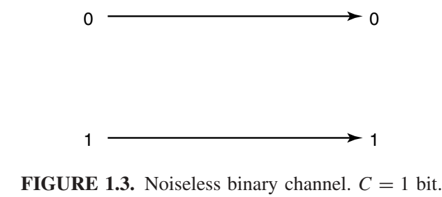
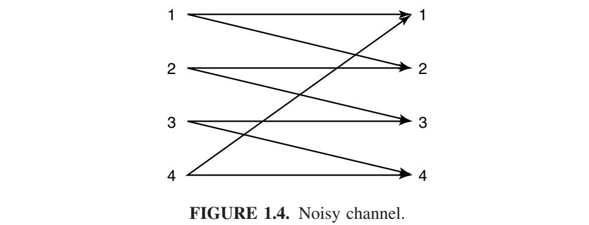
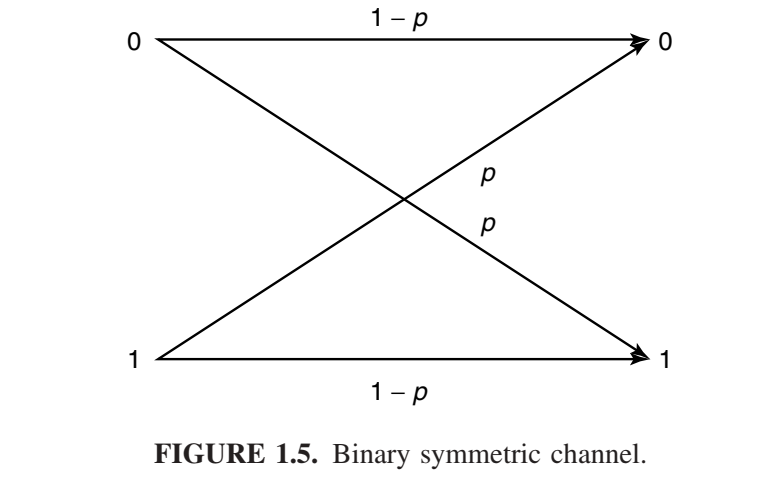

概览
信息论回答通信理论中的两个基本问题：数据压缩的极限是多少（答案：熵H），通信的极限传输速率是多少（答案：信道容量C）。为此，有人认为信息论是通信论的子集。我们认为不仅如此。事实上，它在统计物理学（热力学）、计算机科学（柯尔莫哥洛夫复杂性或算法复杂性）、统计推断（奥卡姆剃刀：“最简单的解释是最好的”）以及概率和统计学（最优假设检验和估计的误差指数）方面都有着根本性的贡献。
本章“第一讲”回顾了信息论及其相关的概念。该主题的完整定义和研究从第二章开始。图 1.1 展示了信息论与其他领域的关系。如图所示，信息论与物理学（统计力学）、数学（概率论）、电子工程（通信理论）和计算机科学（算法复杂性）相交叉。现在我们将更详细地描述这些交叉领域。

电气工程（通信理论）。20世纪40年代初，人们认为以正速率发送信息，且错误概率几乎为零是不可能的。香农证明了，对于所有低于信道容量的通信速率，错误概率都可以接近于零，这震惊了通信理论界。信道容量可以通过信道的噪声特性轻松计算出来。香农进一步论证，诸如音乐和语音之类的随机过程具有不可约的复杂度，低于该复杂度，信号就无法被压缩。他将其命名为熵，以纪念该词在热力学中的对应用法。他还指出，如果源的熵小于信道的容量，则可以实现渐近无差错的通信。

当今的信息理论代表了所有可能通信方案集合的极值点，如图 1.2 所示。数据压缩最小值 \(I(X;\hat{X})\) 位于通信思想集合的一个极端。所有数据压缩方案都要求描述速率至少等于该最小值。另一个极端是数据传输最大值\(I(X;Y)\) ，称为信道容量。因此，所有调制方案和数据压缩方案都位于这两个极限之间。
信息论也提出了实现这些通信极限的方法。然而，这些理论上最优的通信方案，尽管看似完美，却可能在计算上不切实际。我们之所以使用简单的调制和解调方案，而不是香农在信道容量定理证明中提出的随机编码和最近邻解码规则，正是因为这些方案在计算上可行。集成电路和编码设计的进步使我们能够获得香农理论的一些成果。Turbo码的出现最终实现了计算上的实用性。纠错码在光盘和DVD上的应用是信息论思想应用的一个很好的例子。
信息论中通信领域的最新研究集中于网络信息论：即在存在干扰和噪声的情况下，多个发送者向多个接收者同时进行通信的理论。发送者和接收者之间某些速率的权衡是意料之外的，并且都具有一定的数学简单性。然而，统一的理论仍有待发现。
计算机科学（Kolmogorov复杂性）。Kolmogorov、Chaitin 和 Solomonoff 提出了这样一种观点：数据字符串的复杂度可以用计算该字符串的最短二进制计算机程序的长度来定义。因此，复杂度就是最小描述长度。事实证明，这种复杂度定义具有普适性，即与计算机无关，并且具有根本性的意义。因此，Kolmogorov 复杂度为描述复杂性理论奠定了基础。令人欣慰的是，如果序列是从熵为 H 的分布中随机抽取的，则 Kolmogorov 复杂度 K 近似等于香农熵 H。因此，信息论与 Kolmogorov 复杂度之间的联系是完美的。事实上，我们认为 Kolmogorov 复杂度比香农熵更为根本。它是终极数据压缩，并能产生逻辑一致的推理过程。
算法复杂度和计算复杂度之间存在着令人愉悦的互补关系。我们可以将计算复杂度（时间复杂度）和柯尔莫哥洛夫复杂度（程序长度或描述复杂度）视为分别对应程序运行时间和程序长度的两个轴。柯尔莫哥洛夫复杂度侧重于沿第二个轴最小化，而计算复杂度则侧重于沿第一个轴最小化。目前关于同时最小化这两个轴的研究工作很少。
物理学（热力学）。统计力学是熵和热力学第二定律的发源地。熵总是增加的。此外，热力学第二定律还可以用来驳斥任何关于永动机的说法。我们将在第四章简要讨论热力学第二定律。
数学（概率论与统计学）。信息论的基本量——熵、相对熵和互信息——被定义为概率分布的泛函。反过来，它们表征了长序列随机变量的行为，并使我们能够估计罕见事件的概率（大偏差理论），并在假设检验中找到最佳误差指数。
科学哲学（奥卡姆剃刀）。奥卡姆的威廉曾说：“如无必要，勿增原因”，或者换句话说，“最简单的解释就是最好的”。所罗门诺夫和柴廷令人信服地论证道，如果对所有能够解释数据的程序进行加权组合，并观察它们接下来的输出结果，就能得到一个普遍适用的预测程序。此外，这种推论在许多统计学无法处理的问题中也适用。例如，该程序最终可以预测π的后续数字。当该程序应用于正面概率为0.7的抛硬币实验时，也能推断出π的后续数字。当应用于股票市场时，该程序应该能够找到股票市场的所有“规律”，并对其进行最优推断。原则上，这样的程序应该能够发现牛顿物理定律。当然，这种推论非常不切实际，因为剔除所有无法生成现有数据的计算机程序将耗费极其漫长的时间。我们可以预测一百年后的明天会发生什么。
经济学（投资）。在稳定的股票市场中反复投资会导致财富呈指数级增长。财富增长率是股票市场熵值的对偶。股票市场最优投资理论与信息论之间存在着惊人的相似之处。我们发展投资理论来探索这种对偶性。
计算 vs. 通信。当我们用更小的组件构建更大的计算机时，我们同时面临计算限制和通信限制。计算受限于通信，通信受限于计算。这两者交织在一起，因此，所有基于信息论的通信理论的发展都应该对计算理论产生直接影响。
本书预览
信息论最初探讨的问题在于数据压缩和传输领域。答案是诸如熵和互信息之类的量，它们是构成通信过程基础的概率分布的函数。一些定义将有助于初步讨论。我们将在第二章中重复这些定义。
具有概率质量函数\(p(x)\)的随机变量 \(X\) 的熵定义为 \[H(X) = -\sum_x p(x)\ log_2\ p(x).\tag{1.1} \]
我们使用以 2 为底的对数。熵将以比特为单位进行测量。熵是衡量随机变量平均不确定性的指标。它是描述随机变量平均所需的比特数。
示例 1.1.1 假设一个随机变量在32个结果上服从均匀分布。为了识别一个结果，我们需要一个包含32个不同值的标签。因此，5位字符串足以作为标签。
该随机变量的熵为 \[H(x) = -\sum_{i=1}^{32} p(i)\ \text{log}\ p(i) = -\sum_{i=1}^{32}\frac{1}{32}\ \text{log} \frac{1}{32} = \text{1og}\ 32 = 5\ bits, \tag{1.2}\]
这与描述 X 所需的位数一致。在这种情况下，所有结果都有相同长度的表示。
现在考虑一个非均匀分布的例子。
示例 1.1.2 假设有一场有八匹马参加的赛马比赛。假设这八匹马获胜的概率分别为 \(\frac{1}{2}, \frac{1}{4}, \frac{1}{8}, \frac{1}{16},\frac{1}{64}, \frac{1}{64},\frac{1}{64}, \frac{1}{64},\)。我们可以计算这场赛马比赛的熵为
\begin{align} H(X) &= -\frac{1}{2}\ \text{log}\ \frac{1}{2} -\frac{1}{4}\ \text{log}\ \frac{1}{4} -\frac{1}{8}\ \text{log}\ \frac{1}{8} -4\frac{1}{64}\ \text{log}\ \frac{1}{64}\\ &= 2 \ bits. \tag{1.3} \end{align}
假设我们想发送一条消息来表明哪匹马赢得了比赛。一种选择是发送获胜马的索引。这种描述需要3位来表示任何一匹马。但获胜概率并非均匀分布。因此，对获胜概率较高的马使用较短的描述，对获胜概率较低的马使用较长的描述是合理的，这样可以降低平均描述长度。例如，我们可以使用以下一组位串来表示八匹马：0、10、110、1110、111100、111101、111110、111111。在这种情况下，平均描述长度为2位，而均匀编码则为3位。注意，在这种情况下，平均描述长度等于熵。在第五章中，我们证明了随机变量的熵是表示该随机变量所需的平均位数的下限，以及在“20 个问题”游戏中识别变量所需的平均问题数量的下限。我们还展示了如何构建平均长度在熵的 1 位以内的表示。
信息论中的熵概念与统计力学中的熵概念相关。如果我们画一个由n个独立同分布（i.i.d.）随机变量组成的序列，我们将证明一个“典型”序列的概率约为\(2^{-n\ H(x)}\)，并且大约有\(2^{n\ H(x)}\)个这样的典型序列。这一性质（称为渐近均分性质（AEP））是信息论中许多证明的基础。稍后我们将介绍其他一些可以用熵作为自然答案的问题（例如，生成一个随机变量所需的公平抛硬币次数）。
随机变量描述复杂度的概念可以扩展为定义单个字符串的描述复杂度。二进制字符串的柯尔莫哥洛夫复杂度定义为打印该字符串的最短计算机程序的长度。事实证明，如果该字符串确实是随机的，则柯尔莫哥洛夫复杂度接近于熵。柯尔莫哥洛夫复杂度是一个自然的框架，可以用来思考统计推断和建模问题，并有助于更清晰地理解奥卡姆剃刀定律：“最简单的解释就是最好的”。我们将在第一章中描述柯尔莫哥洛夫复杂度的一些简单性质。
熵是单个随机变量的不确定性。我们可以定义条件熵 H(X|Y)，它是在已知另一个随机变量的条件下，一个随机变量的熵。另一个随机变量导致的不确定性的减少被称为互信息。对于两个随机变量 X 和 Y 来说，这种减少被称为互信息
\[I(X;Y) = H(X) - H(X|Y) = \sum_{x,y}p(x,y)\ \text{1og}\ \frac{p(x,y)}{p(x)p(y)}.\tag{1.4}\]
互信息\(I(X;Y)\)是两个随机变量之间依赖关系的度量。它关于 X 和 Y 对称且始终为非负值，当且仅当 X 和 Y 独立时才等于零。
通信信道是一个输出概率依赖于输入的系统。它的特征在于概率转移矩阵 p(y|x)，该矩阵决定了给定输入时输出的条件分布。对于输入为 X 且输出为 Y 的通信信道，我们可以将容量 C 定义为
\[C = {max}_{p(x)}\ I(X;Y). \tag{1.5}\]
稍后我们将说明，容量是指我们能够通过信道发送信息并在输出端以极低的错误概率恢复信息的最大速率。我们将通过几个例子来说明这一点。
示例 1.1.3 （无噪声二进制信道）对于此通道，二进制输入在输出端精确再现。该通道如图 1.3 所示。此处，任何传输的比特都能无误地接收。因此，每次传输，我们可以可靠地向接收方发送 1 比特，容量为 1 比特。我们还可以计算信息容量 C = \(max\ I(X;Y)\) = 1 比特。

示例 1.1.4 （噪声四符号信道）考虑图 1.4 所示的信道。在该信道中，每个输入字母要么以概率 \(\frac{1}{2}\) 被接收为同一个字母，要么以概率 \(\frac{1}{2}\) 被接收为下一个字母。如果我们使用全部四个输入符号，检查输出将无法确定发送了哪个输入符号。另一方面，如果我们只使用两个输入（比如 1 和 3），我们可以立即从输出中判断发送了哪个输入符号。该信道的行为类似于例 1.1.3 中的无噪声信道，我们每次可以通过该信道无错误地传输 1 比特。我们可以计算出这种情况下信道容量 C = \(max\ I(X;Y)\) ，它等于每次传输 1 比特，这与上面的分析一致。

一般来说，通信信道的结构不像本例这样简单，因此我们无法总是找到一个输入子集来无错误地发送信息。但如果我们考虑一个传输序列，所有信道都像本例一样，那么我们就可以找到一个输入序列（码字）的子集，该子集可用于在信道上传输信息，并且与每个码字相关的可能输出序列集几乎不相交。然后，我们可以观察输出序列，并找出错误概率极低的输入序列。
示例 1.1.5 （二进制对称信道）这是一个噪声通信系统的基本示例。信道如图 1.5 所示。

该信道有一个二进制输入，其输出等于输入的概率为1-p。另一方面，概率为p，0被接收为1，反之亦然。在这种情况下，信道容量可以计算为每次传输\(C = 1 + p\ \text{1og}\ p + (1-p)\ \text{log}(1-p)\)比特。然而，如何实现这一容量已不再显而易见。然而，如果我们多次使用该信道，它就会开始变得像示例1.1.4中的噪声四符号信道，我们可以以每次传输C比特的速率发送信息，并且错误概率任意低。
信道信息传输速率的极限是信道容量。信道编码定理表明，这一极限可以通过使用较长码块长度的编码来实现。在实际通信系统中，我们所能使用的编码的复杂程度受到限制，因此可能无法实现容量。
互信息实际上是一个更普遍的量——相对熵 D(p||q) 的一个特例，它衡量的是两个概率质量函数 p 和 q 之间的“距离”。它的定义如下：
\[D(p||q) = \sum_x p(x)\ log\frac{p(x)}{q(x)}.\]
虽然相对熵并非真正的度量，但它具备度量的一些属性。具体而言，它始终为非负值，且当且仅当 p = q 时为零。相对熵是分布 p 和 q 之间假设检验中误差概率的指数。相对熵可用于定义概率分布的几何结构，从而解释大偏差理论的许多结果。
信息论与股票市场投资理论有很多相似之处。股票市场由一个随机向量X定义，其元素为非负数，等于股票收盘价与开盘价之比。对于服从分布F(x)的股票市场，我们可以将倍增率W定义为
\[W\ = {max}_{b:b_i\ge 0, \sum b_i = 1}\int \text{log}\ b^t x\ d\ F(x). \tag{1.7}\]
倍增率是财富增长的最大渐近指数。倍增率具有许多与熵相似的性质。我们将在第16章探讨其中一些性质。
H、I、C、D、K、W 等量自然出现在以下领域：
-
数据压缩。随机变量的熵 H 是该随机变量最短描述的平均长度的下限。我们可以构建平均长度与熵相差 1 位以内的描述。如果我们放宽完美恢复源的约束，那么我们可以问：描述失真度达到 D 的源需要多少通信速率？以及多少信道容量足以使该源在信道上传输，并在失真度小于或等于 D 的情况下进行重建？这就是速率失真理论的主题。
当我们尝试形式化非随机对象的最短描述概念时，我们得到了柯尔莫哥洛夫复杂度K的定义。随后，我们证明了柯尔莫哥洛夫复杂度具有普遍性，并且满足最短描述理论的许多直观要求。
-
数据传输。我们考虑如何传输信息，使得接收方能够以较小的错误概率解码消息。本质上，我们希望找到相互距离较远的码字（输入信道的符号序列），使得它们的噪声版本（在信道输出端可用）可以区分。这相当于在高维空间中进行球体填充。对于任何一组码字，都可以计算接收方出错（即对发送了哪个码字做出错误的判断）的概率。然而，在大多数情况下，这种计算非常繁琐。
香农利用随机生成的编码证明了，人们可以以低于信道容量C的任何速率发送信息，且错误概率任意低。随机生成的编码这一概念非常独特。它为一个非常困难的问题的简单分析提供了基础。证明中的一个关键思想是典型序列的概念。容量C是可区分输入信号数量的对数。
-
网络信息论。前面提到的每个主题都涉及单个源或单个信道。如果希望压缩多个源中的每一个，然后将压缩后的描述组合在一起，形成一个源的联合重构，该怎么办？这个问题可以通过斯莱皮安-沃尔夫定理（Slepian–Wolf theorem）来解决。或者，如果多个发送者独立地向一个公共接收者发送信息，该怎么办？这个信道的容量是多少？这就是廖和阿尔斯韦德解决的多址信道。或者，如果有一个发送者和多个接收者，并且希望同时向每个接收者传递（可能不同的）信息，该怎么办？这就是广播信道。最后，如果在干扰和噪声环境中有任意数量的发送者和接收者，该怎么办？从各个发送者到接收者的可实现速率的容量范围是多少？这是一般的网络信息论问题。所有上述问题都属于多用户或网络信息论的一般领域。尽管对网络综合理论的希望可能超出了当前的研究技术，但人们仍然希望所有答案都只涉及复杂形式的相互信息和相对熵。
-
遍历理论。渐近均分定理指出，一个遍历过程的大多数n个样本序列的概率约为\(2^{-n\ H}\)，并且大约有\(2^{n\ H}\)个这样的典型序列。
-
假设检验。相对熵D是两个分布之间假设检验中误差概率的指数。 它是分布之间距离的自然度量。
-
统计力学。熵H在统计力学中作为物理系统中不确定性或无序性的量度出现。粗略地说，熵是物理系统配置方式数量的对数。热力学第二定律指出，封闭系统的熵不能减少。稍后我们将对第二定律进行一些解释。
-
量子力学。这里，冯·诺依曼熵 \(S = tr(\rho\ ln \rho) = \sum_i \lambda_i\ \text{log}\ \lambda_i\)相当于经典香农-玻尔兹曼熵 \(H = -\sum_i p_i\ \text{log}\ p_i\)。由此可以找到数据压缩和信道容量的量子力学版本。
-
推理。我们可以使用柯尔莫哥洛夫复杂度 K 的概念来找到数据的最短描述，并以此作为模型预测下一步的走向。最大化不确定性或熵的模型，可以得到最大熵推理方法。
-
赌博与投资。财富增长率的最优指数由倍增率W决定。对于赔率均匀的赛马比赛，倍增率W与熵H之和为常数。由于辅助信息导致的倍增率的增加，等于赛马比赛与辅助信息之间的互信息I。类似的结果也适用于股票市场的投资。
-
概率论。渐近均分性质 (AEP) 表明，大多数序列具有典型的特征，即它们的样本熵接近于 H。因此，可以将注意力集中于这些大约 \(2^{nH}\) 个典型序列。在大偏差理论中，一个集合的概率约为 \(2^{−nD}\)，其中 D 是集合中最接近元素与真实分布之间的相对熵距离。
-
复杂性理论。柯尔莫哥洛夫复杂度 K 是衡量对象描述复杂性的指标。它与计算复杂度相关，但又有所不同，后者衡量的是计算所需的时间或空间。
诸如熵和相对熵之类的信息论量，作为通信和统计学中基本问题的答案，屡屡出现。在研究这些问题之前，我们将先了解这些答案的一些性质。我们将从第二章开始，介绍熵、相对熵和互信息的定义和基本性质。